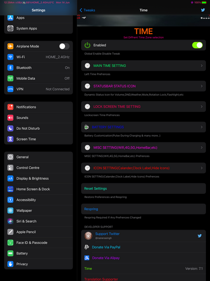

This Tweak allows you to customise Time
StatusBar (Right,Left,Control Center).iPhone X,XS(Max),XR only.(A12,A13,A14),iPad supported.
Non-X Model Supported.
Please check below Version History for more feature addition continuously.
Features:
-Status Icon addition flashlight status, weather status & others. Now you can set on the Right or Left side time of Notched Devices. Checkout in settings.
-Battery Customizations fixes. Alert status.
-Compiled on latest SDK & on MacOS 12.
Yes, finally battery PULSE during charging iOS14 support. Battery custom Sound Alert, Alert with battery info of connected devices; many more feature inside preferences. Checkout.
Special Fonts added that look elegant.
Weather information. Featured Volume %age in statusbar with mute,airplane mode,rotationUI Unlock status.
Presets addition,IP,external-internal,Weather,location,etc,checkout.
Setting to display:
-Timezone Support (You will find out what its in the preference setting).
-Dual,Triple,Qudra Timezone.
-Single Tap to swap preferred time options(left top time)
-Single tap on Right side time for swap time options.
-CC Time with same options as in Home page(To know more details check Preferences).
-CC Network Customization, Cellular text(To know more details check Preferences).
Time Options Selections in Preferences:-
-System Storage Details(To know more details check Preferences).
-Network speed(Up,Down).
-Ram speed(MB,%).
-Wifi SSID(MB,%).
-Non-X model supported including Ipads.
-Lockscreen Time & Date can be customizable now
-Battery %.With color change after each 5% changes.
-System Uptime, CPU Usage(Size need adjust manually)
-WifiNetwork or else instead of Cellular Network display option,
-Volume Sound, Mute Toggle sound,
-Clock Icon label customization,
-Calander Icon label customization,
-Switches color systemwides,
-Double tap Wifi icon to disable wifi,
All includes with Custom sizes, fonts, Colors, WiFi, Cellular,4G to 5G or etc
Check out http://www.nsdateformatter.com/ for more date time format settings.


More Versions History:
ver6.5:iOS14 supported now.
ver6.0~6.2~6.3~6.4
Lockscreen Time & Date custom font addition.
Vibrate while swaping on status time during tap action.
Bluetooth headphone actual icon.
Other bugs fixes.
Shows Mute Icon in statusbar fixes.
Shows DND Icon in statusbar fixes.
Yes its Shows Volume %age in Statusbar.
More Customizations.
Weather in Status Bar.
Weather App with Weather Status.
Preset With More Addtion upto 56.
Please install libiimagepicker for ver 6.0.
ver6.2.Fixed Volume % age wont disappear after volume button release.Volume step switch added.
ver6.3.Bugs fixes,Non-X Model Statusicon for Volume & Mute Support
ver6.4:Lock Screen Status Icon support removed.
ver5.9
Major bugs fixed,Feature addition(Feature addition will be remark soon).
Yes it does have weather temp,Headphone icon.
Prefrences minimized for ease.Volume step rate fixed.
Breadcrumb switch.
Mute Icon if device muted in status bar(Twitter icon for now,Little Buggy now but will be fix).
Statusbar Text Color updated.
Volume button sound fixes while playing music.
ver5.8
Prefrences imporvements.Bugs Fixed.(iOS13.5 Supported too),
Note:There is conflict with Bazzi tweak if battery Prefrences Used with this Tweak.
ver5.7
Prefrences imporvements.Bugs Fixed.
Feature additions.
Alderis colorpicker recommended.Still user can decide.
iOS13.4.1 support
ver5.6(Removed libimagepicker dependency)
Right Time can show swap feature automaticaly as per duration rate.eg;easy to know your current wifi network or else.
Display options feature additions.
Mostly prefrences improvements.
Defaults Prefrences settings for user requested.
Prefrences are easy to adjust and mostly user friendly.
Currently manual image sized picture can be used form lcoal storage.
ver5.5:(Bug Fixes.Install libimagepicker dependency)
ver5.4:Skip it
ver5.2~5.3.1
iOS13 support,Alot of Customization as you wished(Tetsed on XS max,X,6s+),
-WifiNetwork or else instead of Cellular Network.Choose in display option or custom text,
-Volume Sound,Mute Toggle sound,
-Clock Icon label customization,
-Calander Icon label customization,
-Switches color systemwides,
-Double tap Wifi icon to disable wifi,
-Battery Icon & %age change colors based on battery level,
-Display options feature addition.
-iPAD supported.
ver5.1(Bugs Fixes,Display options updated with addition more)
ver5.0 (Lockscreen Time & Date can be customizable now(LS2 tweak conflicts),Battery colors & charge level,Dock background alpha clear,Slide to unlock text with diffretn display preset options,
Non-X model preferences optimization,Time visible in folders,hide bar X,Volume %age with volume level setting for each click speed,
Time Display Preset options with more features addition,Prefrences minimized on device & ios version depending)